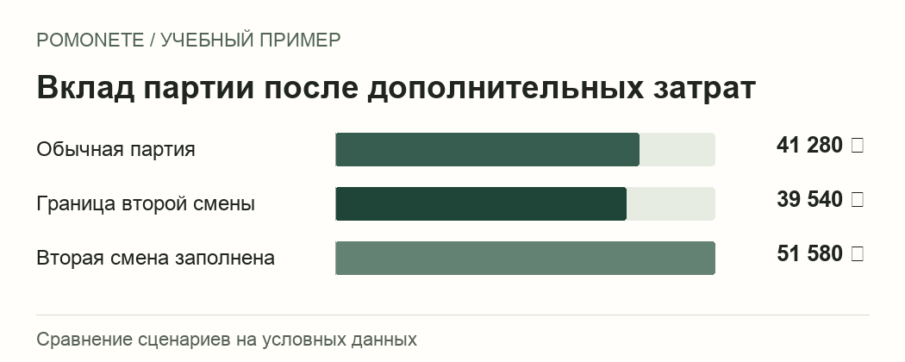

Когда дополнительный объём товара перестаёт давать прибыль селлеру
Аналитика Яндекс Маркета со ступенчатой стоимостью второй складской смены.
Команда продаёт на Яндекс Маркете держатели для садовых инструментов. В среднем каждая единица даёт положительный вклад. Когда объём выходит за вместимость смены, дополнительный участок меняет решение. Для селлера важно посчитать ступень расходов, а затем проверить минимальную загрузку.
Предельный эффект и общая прибыль
Соберите средний переменный расход с товара без стоимости второй смены. Отдельно запишите, в какой момент нужно привлекать ещё одного человека или арендовать слот. Сравните каждую возможную загрузку с вкладом обычной партии. Так видно цену дополнительных единиц сверх границы, а не просто общий итог.
Чтобы пересобрать расчёт «Вклад партии после дополнительных затрат» для своего магазина, перенесите в него исходные числа. В формуле A обозначает «доход с единицы, ₽», B обозначает «переменные затраты с единицы, ₽», C обозначает «продано единиц», D обозначает «дополнительная смена, ₽». Удельную разницу умножают на количество. Последняя величина относится ко всему сценарию и учитывается один раз. Запишите рядом период и охват каждого среза. Если для одной строки известна только оценка, оставьте пояснение непосредственно рядом с ней: по итоговой цифре источник уже не восстановить.
Вклад партии после дополнительных затрат = (A − B) × C − D
| Условие | Доход с единицы, ₽ | Переменные затраты с единицы, ₽ | Продано единиц | Дополнительная смена, ₽ | Вклад партии после дополнительных затрат |
|---|---|---|---|---|---|
| Обычная партия | 1 850 | 1 420 | 96 | 0 | 41 280 ₽ |
| Граница второй смены | 1 850 | 1 420 | 108 | 6 900 | 39 540 ₽ |
| Вторая смена заполнена | 1 850 | 1 420 | 136 | 6 900 | 51 580 ₽ |

В сценарии «Обычная партия» в формулу подставляем доход с единицы, ₽ = 1 850, переменные затраты с единицы, ₽ = 1 420, продано единиц = 96, дополнительная смена, ₽ = 0. Получается 41 280 ₽. Объём проходит в смене, которая уже есть в расписании магазина.
В сценарии «Граница второй смены» в формулу подставляем доход с единицы, ₽ = 1 850, переменные затраты с единицы, ₽ = 1 420, продано единиц = 108, дополнительная смена, ₽ = 6 900. Получается 39 540 ₽. Увеличение на несколько заказов требует дополнительных работников на заданную дату.
В сценарии «Вторая смена заполнена» в формулу подставляем доход с единицы, ₽ = 1 850, переменные затраты с единицы, ₽ = 1 420, продано единиц = 136, дополнительная смена, ₽ = 6 900. Получается 51 580 ₽. Дополнительный ресурс загружен больше, его общая стоимость сохраняется.
Если «Обычная партия» взять за исходную точку, «Граница второй смены» меняет показатель «вклад партии после дополнительных затрат» на -1 740 ₽, а «Вторая смена заполнена» на 10 300 ₽. Между двумя последними строками разница составляет 12 040 ₽ при вычитании второй из третьей. Смотрите, какой именно вход изменился между строками. Если менялись объём и условия одновременно, итог сравнения относится ко всему сочетанию.
От меньшего результата до большего в таблице 12 040 ₽. При переходе из «Граница второй смены» со значением 39 540 ₽ в «Вторая смена заполнена» со значением 51 580 ₽ условия заданы явно. Этот интервал описывает три построенных случая, а для вероятности исходов нужна история. В рабочей записке полезно назвать минимальное значение, при котором сохранится ваше решение. Если такой порог попадает внутрь интервала, подтвердите спорный параметр до того, как менять процесс.
Откуда приходит резкий скачок
Условия подрядчика могут давать оплату за целый выход, даже если понадобится только часть смены. Проверьте рабочую смету и календарь задач. Если смену можно разделить с другим складом, рассчитайте это отдельным сценарием и посмотрите, не перенесётся ли на соседнюю группу часть издержек.
У сценария «Граница второй смены» есть входы: доход с единицы, ₽, переменные затраты с единицы, ₽, продано единиц, дополнительная смена, ₽. Для каждого впишите, где взять факт и с каким временным лагом он поступит. Опорой будут экономика заказов и собственная закупочная ведомость. Если один источник обновляется быстрее другого, зафиксируйте общий момент доступности. При существенном разрыве покажите последние данные отдельным оперативным значением.
Выгрузка маркетплейса даёт начисления по операциям. Собственную стоимость закупки, труд и расходники подставляют из учёта магазина с датой действия. Для решения по ассортименту разделите повторяющиеся переменные расходы, затраты на запуск и текущие фиксированные расходы команды. После изменения предложения обновляются и продажи соседних изделий. Счёт по одному товару имеет смысл дополнить итогом той группы, между вариантами которой может переключиться покупатель.
Что сильнее всего меняет результат
От результата 39 540 ₽ в строке «Граница второй смены» пересчитайте несколько вариантов. Проверьте «доход с единицы, ₽», «переменные затраты с единицы, ₽», «продано единиц», «дополнительная смена, ₽». Прибавка около десятой доли на вход показывает реакцию за один шаг. Целые числа сохраняем целыми. Для долей, где прирост выводит числитель за предел базы, пробуем уменьшение. Все остальные параметры при каждой подстановке сохраняются.
- «Доход с единицы, ₽» меняется с 1 850 на 2 035. При прежних остальных входах получается 59 520 ₽, сдвиг составляет 19 980 ₽.
- «Переменные затраты с единицы, ₽» меняется с 1 420 на 1 562. При прежних остальных входах получается 24 204 ₽, сдвиг составляет -15 336 ₽.
- «Продано единиц» меняется с 108 на 119. При прежних остальных входах получается 44 270 ₽, сдвиг составляет 4 730 ₽.
- «Дополнительная смена, ₽» меняется с 6 900 на 7 590. При прежних остальных входах получается 38 850 ₽, сдвиг составляет -690 ₽.
Больше всего изменила итог подстановка «доход с единицы, ₽». Отклонение составило 19 980 ₽. До сбора новых данных оцените, насколько правдоподобен такой шаг. Например, расход может подтверждаться документом, а объём пока наблюдается лишь частично. Уточняйте прежде всего те входы, где одновременно возможен заметный сдвиг и мало подтверждений.
Привлекать смену полезно сравнить с переносом части менее срочных операций. За второй вариант назначьте ответственную сторону и срок завершения перенесённых задач. Иногда выигрыш на графике обработки оборачивается недоступностью другого товара и задержкой результата.
Как сравнить способы принять заказы
На ближайший период составьте три уровня объёма: прежний, чуть выше границы, с полной загрузкой. Оцените вклад и риск срыва обработки для каждого. Если экономика держится на полном объёме, заранее убедитесь, что спрос в нужные дни подтверждается.
Поставьте рядом плановую и фактическую строки сделки с сохранённой себестоимостью. Проверку удобнее начинать с позиций, на которые приходится основной вклад, потом выделять случаи с нестандартной логистикой, возвратом или разовой скидкой. Если после смены состава продаж средняя величина улучшилась, восстановите исходные веса и оцените, сколько прироста действительно получилось на сопоставимых позициях.
Для управленческой встречи подготовьте два небольших примера из рабочих записей. Первый сверяет «вклад партии после дополнительных затрат» при базовых условиях «Обычная партия». Второй берёт изменившуюся строку и объясняет, какой источник исправлен. Селлеру Яндекс Маркета будет проще повторить расчёт на новой группе, если видны исходные значения, дата анализа и момент, когда итог станет достаточно точным для решения.